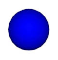
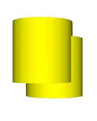
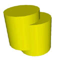

| Requirements |
| Just Perl |
VRML, the Virtual Reality Modeling Language, enables you to describe complicated 3D scenes and interactions with them in a platform-independent way. It has even been standardized by ISO (ISO/IEC 14772-1:1998), but while the technology is interesting, it hasn't really caught on, mostly for practical reasons: Browsers exist mainly for the PC platform, while many people who could create applications for the technology use Unix-like operating systems.
Not long ago, I needed a real VRML browser for Linux. So I decided to write one. This is the story of how I got the prototype up and running in just a couple of hours. I have modified some of the gory details to show the final, cleaned-up APIs instead of my first attempts which were not quite presentable. In this article, I'll talk about how I use Perl to parse the VRML language; that is, how my program turns VRML files into something that Perl can understand. In a future article, I'll show how I embedded that parser into a web browser to display the images.
An example is better than a thousand words--here is a small VRML file that describes a blue ball with radius 1.5 centered at the point (0, 1, 0). A snapshot of the scene is shown below. I've changed the background to white for convenience, although the default background in VRML is black. I didn't want to bother you with the additional complexity of adding a Background node, which you can read about in the in VRML documentation.
#VRML V2.0 utf8
Transform {
translation 0 1 0
children [
Shape {
appearance Appearance {
material Material {
diffuseColor 0 0 0.8
}
}
geometry Sphere {
radius 1.5
}
}
]
}

Figure 1: A VRML Object.
The first line identifies the VRML version and encoding used. To understand the rest of the file, you need to know that most VRML consists of nodes and fields, which are properties of those nodes. Let's start from the node called Shape. (By convention, nodes start with capital letters and fields begin with lowercase letters.) We specify two fields for this node, appearance and geometry. As the value for geometry we provide another node, a Sphere with one field, radius, with value 1.5. The value for the appearance field of the sphere is a little more complicated it is an Appearance node, which for its material field has a Material node, which for its diffuseColor field has 0 0 0.8 as value--a bright blue. The Shape node in turn is the value of the children field of a Transform, whose translation is 0 1 0--one meter upwards.
This description may seem a little verbose to express such a simple shape. For longer files, it is possible to optimize some of the complexity by declaring prototypes (akin to C #define statements, but with named instead of positional parameters). However, for this simple file, there can be no shorter description. VRML violates the credo familiar to Perl programmers: "Easy things should be easy, and hard things should be possible." VRML has concentrated only on making complicated things possible. That's because VRML is meant more as a portable file transfer format than a programming language, and is more suited for automatic generation than hand coding. I'm currently planning to write (in Perl, of course) a text-based authoring system that will look like VRML but deal with the common cases more elegantly. So our file consists only of nodes, their fields, and comments. In turn, the fields may have other nodes as their values. Full VRML97 is slightly more complicated than this, so let us immediately make life more difficult and introduce the fact that you can refer to nodes via DEF and USE. See Figures 2 and 3.

Figure 2: Two Overlapping Cylinders.

Figure 3: Both Cylinders are the same Object so a change in one affects the other.
#VRML V2.0 utf8
DEF CYL Shape {
appearance Appearance {
material Material {
diffuseColor 0.8 0.8 0
}
}
geometry Cylinder {
}
}
Transform {
translation -0.4 0.5 0.5
children [
USE CYL
]
}
This file contains two (overlapping) copies of the Shape node. The difference between this scene and one that has a second copy of the Shape node: If, say, the color of one cylinder is changed later, the color of the other cylinder changes as well. There is only one node.
Every VRML-compliant browser performs three tasks: reading the VRML file, managing the internal scene graph (including event-based animations), and rendering the scene on your display. In this article, we're concentrating on the first two tasks and their interaction.
In order to be able to parse future VRML formats (such as compressed binaries, which are being developed by the VRML consortium), it would be nice to have a concise API between the parser and the scene graph so that the parser can explain any structure with a fixed set of methods. Separating these two components lets us change one without having to worry about the other. For instance, it would be possible to create a program that transforms VRML worlds in some way by plugging the browser onto a different backend, or create VRML worlds in the scene manager with simple Perl method calls, so we get functionality equivalent to Sun's Java3D as a bonus for Perl.
Let us encapsulate the API so that we can focus on the parser. We'll use a Perl object for the scene manager. We need methods to create new nodes, establish DEF/USE dependencies, and name the topmost nodes of the scene:
$n = $s->new_node($typename,
{field => $val, field2 => $val2});
$d = $s->new_def($name, $node);
$u = $s->new_use($name);
$s->topnodes($nodes); # nodes is an array reference
That's all there is to it--now that we've settled on these methods as our API, we don't need to know about their implementation to dive into the parser.
| The Details, Part 1: Dynamic Function Calls (Listing 1). |
Let's examine the file format more closely. It's actually dead simple. At any given moment, we are expecting the next thing to be either the beginning of a VRML node (possibly DEF/USE), a field name (or the curly brace finishing the node), or a field value. In fact, we can reduce this even further by noting that a node is simply a field value of the generic VRML type SFNode, so parsing a VRML file is equivalent to parsing a node--except that a file has no brackets.
And that's how we'd write the parser if we were coding it top-down, from the most generic types to the most specific. But let's code bottom-up and define a package for each field type, named VRML::Field::type. Each package will have a subroutine called parse() that accepts two parameters: the scene into which we are inserting new nodes, and the string we are parsing. Each subroutine will return a scalar that describes the field value parsed starting at the position using \G (see the perlre documentation, and Listing 2). For instance,
package VRML::Field::SFVec3f;
sub parse {
$_[2] =~ /\G\s*($Float)\s+
($Float)\s+
($Float)\b/ogscx
or die "$_[2] at $p didn't match SFVec3f: '",
$type->es($_[2]), "'\n";
return [$1, $2, $3];
}
where the variable $Float has been defined as
$Float = q( [\deE+\-\.]+ );
Note that we don't use the usual idiom at the beginning of the subroutine (see Figure 3):
sub parse {
my ($type, $scene, $string) = @_
This would make a copy of the string, wasting memory and making it impossible to use \G. The members of the @_ array, however, are passed by reference so we can use \G.
Parsing simple VRML field values seems clear enough, and we can easily write more of these subroutines later to handle different field types. We can even use inheritance:
package VRML::Field::SFColor; @ISA=VRML::Field::SFVec3f;
This implements parsing for colors. Since colors have the same syntax as 3-D vectors, this lets us reuse the vector code to parse colors.
Note that I already chose (without telling you) the basic representation of field values natural to Perl. The SFVec3f field is represented as a reference to an array containing three scalar members, giving the components of the vector along each axis.
In order to parse the nodes, we need to know the type of all its fields. For the moment, let us assume they are stored at $VRML::Nodes{nodetype}{FieldTypes}{fieldname}.
Given all this, we can write the function to parse an SFNode:
package VRML::Field::SFNode;
sub parse {
my ($type, $scene) = @_;
$_[2] =~ /\G\s*($Word)\b/ogsc or
parsefail($_[2], "SFNode didn't begin with a word!");
my $nodetype = $1;
if ($nodetype eq "NULL") {return "NULL"}
if ($nodetype eq "DEF") {
$_[2] =~ /\G\s*($Word)\b/ogsc or
parsefail($_[2],"DEF must be followed by defname");
my $defname = $1;
my $node = VRML::Field::SFNode->parse($scene,$_[2]);
return $scene->new_def($defname, $node);
}
if ($nodetype eq "USE") {
$_[2] =~ /\G\s*($Word)\b/ogsc or
parsefail($_[2],"USE must be followed by defname");
my $usename = $1;
return $scene->new_use($usename);
}
my $fieldtypes = $VRML::Nodes{$nodetype}{FieldTypes};
if (!defined $fields) {
parsefail($_[2], "Undefined node type '$nodetype'");
}
my %fields;
while ($_[2] !~ /\G\s*}/gsc) {
$_[2] =~ /\G\s*($Word)\s+/ogsc or
parsefail($_[2], "Field name not found");
my $fname = $1;
my $ftype = $fieldtypes->{$fname};
if (!defined $ftype) {
parsefail($_[2],"Unknown field '$fname' for '$nodetype'");
}
$fields{$fname} = "VRML::Field::$ftype"->parse($scene,$_[2]);
}
return $scene->new_node($nodetype, \%fields);
}
Here, $Word is a variable containing a pattern (see Listing 2). It's interpolated into match (//) expressions several times, and is defined like so:
$Word = q([^+0-9"'#,\.\[\]\\{}\0-\x20-][^"'#,\.\{\}\\{}\0-\x20]*);
That's how VRML defines an identifier, allowing characters like the dash to appear in identifiers, unlike most other languages. Note how we don't just parse the next word if we get a DEF, but recurse, calling parse() again. We need the recursion, because statements like DEF FOO1 DEF FOO2 DEF FOO3 USE BAR are legal VRML. Not that they are particularly useful.
There is one more thing we need to parse the VRML files shown above: we need to be able to handle MFNodes. An SFNode is a single node; an MFNode is an array of SFNodes. However, since all the MF types are related to the SF types in the same way, we can cut corners and define all of the MF types in one stroke:
package VRML::Field::Multi;
sub parse {
my($type,$scene) = @_;
my $stype = $type;
$stype =~ s/::MF/::SF/;
if ($_[2] =~ /\G\s*\[\s*/gsc) {
my @a;
while($_[2] !~ /\G\s*,?\s*\]\s*/gsc) {
$_[2] =~ /\G\s*,\s*/gsc; # Eat any commas
my $v = $stype->parse($scene, $_[2], $_[3]);
push @a, $v if defined $v;
}
return \@a;
} else {
my $res = [$stype->parse($scene, $_[2], $_[3])];
# Eat comma if it's there
$_[2] =~ /\G\s*,\s*/gsc;
return $res;
}
}
package VRML::Field::MFNode;
@ISA=qw/VRML::Field::Multi/;
package VRML::Field::MFVec3f;
@ISA=qw/VRML::Field::Multi/; ...
We've made frequent use of the parsefail() subroutine along the way. It simply prints out an error message depending on the position:
sub parsefail {
my $p = pos $_[0];
my $n = ($p>=50 ? 50 : $p);
my $textb = substr($_[0], $p-$n,$n);
my $texta = substr($_[0], $p,50);
die("PARSE ERROR: '$textb' XXX '$texta', $_[1]");
}
This way the position of the error is pinpointed for the user with the XXX so that it will be easier to figure out what went wrong.
Now we just pull it all together: the following measly little subroutine will actually parse our chosen subset of VRML
sub parse {
my($scene, $text) = @_;
$text =~ s/#.*\n//g; # Remove comments
my @a;
while ($text !~ /\G\s*$/gsc) {
push @a, VRML::Field::SFNode->parse($scene, $text);
}
$scene->topnodes(\@a);
}
This function parses a string of VRML code and places the structure into $scene, the scene manager object. Now we can test this toy parser by creating an impromptu scene manager. The scene manager prints out the things passed to it and returns incremented strings ("Node1", "Node2",...) from new_node() and the other functions in our API.
| The Details, Part 3: Pass By Reference (Listing 3). |
There are several things where we have simplified the situation a little to fit it all into this article. For instance, the parser as I describe it here chokes on strings that look like comments:
Text {
string "
Foo
# The browser will think this is a comment "
}
Now the poor parser is hopelessly confused. We do need a more complicated regex to remove comments.
Also, in order to do real VRML, our parser needs to be expanded to handle prototypes (PROTO declarations, in VRML parlance) and events. Furthermore, a particular node called Script is tricky, because it can define its own fields. However, it is possible if we let our parser define new node types on the fly.
And this is exactly what I've done: the toy project has grown into a full-blown VRML browser called FreeWRL, which implements the VRML::Browser module. The home page of the project is at http://www.iki.fi/~lukka/freewrl. The browser is approaching full VRML97 compliance fast, with scripting working for Java and JavaScript as well as several navigation paradigms and True-Type text support.
__END__
{kind=link}